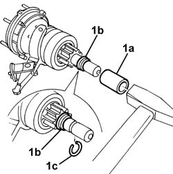
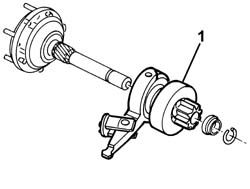
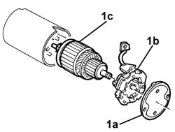
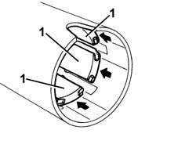
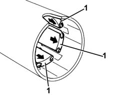
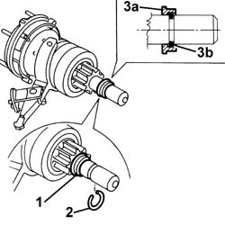

5520B14 STARTER MOTOR - DISMANTLE AND REBUILD AT BENCH - WASH, CHECK AND REPLACE COMPONENTS IF NECESSARY
- Path
- Procedures > 55 ELECTRICAL EQUIPMENT > 5520 ENGINE STARTING > 5520B STARTER MOTOR AND COMPONENTS > 5520B14 STARTER MOTOR - DISMANTLE AND REBUILD AT BENCH - WASH, CHECK AND REPLACE COMPONENTS IF NECESSARY
- Kind
- repair procedure (removal / refitting; the operation number is the code)
- Applies to
- engines: 2.0 JTS, 3.2 V6, 1.9 JTD 16V; all production periods
- Interactive page
- https://sloeber94.github.io/elrnDB-aGt/en/#/125001623
Applies to: engines: 2.0 JTS, 3.2 V6, 1.9 JTD 16V; all production periods
Op. 5520B18 STARTER MOTOR SOLENOIDS - R+R WITH MOTOR REMOVED
1. With the aid of a suitable bush (1a), slide the retaining ring (1b) and release the circlip (1c), then extract the retaining ring (1b) from the shaft.

Applies to: engines: 2.0 JTS, 3.2 V6, 1.9 JTD 16V; all production periods
1. Remove the coupling with the clutch.

Applies to: engines: 2.0 JTS, 3.2 V6, 1.9 JTD 16V; all production periods
1. Remove cover (1a), brush holder (1b) and rotor (1c).

Applies to: engines: 2.0 JTS, 3.2 V6, 1.9 JTD 16V; all production periods
1. If necessary, remove the permanent magnets from the stator body by pushing in the arrowed direction.

Applies to: engines: 2.0 JTS, 3.2 V6, 1.9 JTD 16V; all production periods
Check that the dismantled components are not damaged.
Clean the components with compressed air and a clean cloth. Do not use liquid detergents.
1. If the permanent magnets were removed, refit into the stator body seats.

Applies to: engines: 2.0 JTS, 3.2 V6, 1.9 JTD 16V; all production periods
1. Apply a suitable amount of grease to the rotor shaft teeth.
2. Refit rotor ( 2c), brush holder (2b) and cover (2a).
Applies to: engines: 2.0 JTS, 3.2 V6, 1.9 JTD 16V; all production periods
1. Grease the gears and joints. Then refit the coupling and clutch to the shaft.
Applies to: engines: 2.0 JTS, 3.2 V6, 1.9 JTD 16V; all production periods
1. Fit the retaining ring on the shaft.
2. Engage the retaining ring in its housing.
3. With the aid of a fitting tool, fit retaining ring (3a) to circlip (3b) as shown in detail in the diagram.

Applies to: engines: 2.0 JTS, 3.2 V6, 1.9 JTD 16V; all production periods
Op. 5520B18 STARTER MOTOR SOLENOIDS - R+R WITH MOTOR REMOVED